The main impact of a 200 basis-point (2.00 percentage-point) rise in United States interest rates on Spain is a 0.03% drop in GDP by the 11th quarter — a minimal spillover. Spain ranks 28th of the countries covered by absolute GDP response, placing it in the "minimal" band. The shock is a US monetary tightening, and Spain's own policy rate does not move at all over the horizon, so everything here is transmission from abroad rather than a domestic tightening. The peak GDP loss of −0.0277% of GDP arrives in Q11, and the path is slow and hump-shaped: essentially nothing in Q1 (−0.0008%), building through the middle quarters, cresting just after the two-and-a-half-year mark, then fading to −0.0073% of GDP by Q20. This is a small, delayed, and largely self-correcting spillover.
Demand and trade. Household consumption is the largest domestic demand component hit, peaking at −0.0132% below baseline in Q11 and still −0.0034% down by Q20 — households pull back modestly as financial conditions tighten abroad. Private investment falls considerably harder, peaking at −0.0773% below baseline in Q10, reflecting the higher cost of capital; it is still −0.0183% below baseline at Q20, so the investment drag is the most persistent of the demand components. Net exports — this model does not split imports from exports, so net exports is the trade balance — actually improve, rising to +0.1106% of GDP above baseline by Q14 and holding near +0.098% at Q20. Government spending edges up to +0.006% above baseline by Q11, a small automatic-stabiliser-style offset, and government debt rises very slightly, peaking at +0.0011% of GDP around Q18.
External / FX. The real exchange rate — currency strength — appreciates steadily, reaching +0.6044% above baseline by Q16 and remaining near +0.59% at Q20. A stronger real exchange rate normally hurts competitiveness, yet net exports improve here; the resolution is that the improvement in the trade balance is driven by the domestic demand contraction (imports falling faster than exports) rather than by a competitive currency gain. The currency appreciation is a persistent feature of the horizon, not a temporary one.
Labour. Employment falls to −0.0155% below baseline by Q14, a small decline that tracks the output path with a lag, and it is still −0.0109% below baseline at Q20. Unemployment rises correspondingly, peaking at +0.0109 percentage points above baseline in Q14 and easing only to +0.0072 percentage points by Q20. Real wages, by contrast, rise throughout, reaching +0.1047% above baseline by Q20 — the labour market loosens enough that real compensation improves even as employment and unemployment deteriorate modestly.
Prices. CPI inflation rises to +0.0207 percentage points above baseline at its Q8 peak, then fades to +0.0004 percentage points by Q20, mostly faded by Q15. Domestic inflation follows a similar but smaller arc, peaking at +0.0145 percentage points in Q8 and fading to +0.0003 percentage points by Q20. Firms' marginal cost falls to −0.0164% below baseline by Q11, consistent with weaker demand and a stronger currency weighing on input costs; the marginal-cost decline is more persistent, still −0.0043% below baseline at Q20.
Financial conditions. The local policy rate is unchanged at 0.00 percentage points throughout — Spain does not respond with its own rate move. Government 2-year, 5-year, and 10-year yields are all flat at 0.00 percentage points across the horizon, so the yield curve contributes no domestic impulse in this simulation. Bond prices fall sharply, peaking at −0.693% below baseline in Q8 as higher global discount rates hit valuations, then recovering to −0.025% below baseline by Q20. The equity index falls to −0.2748% below baseline at its Q8 peak and remains −0.0227% below baseline at Q20, mostly faded by Q16. Tobin's Q — the value of installed capital — falls to −0.0541% below baseline by Q10 and stays −0.0128% below baseline at Q20. House prices decline gradually, reaching −0.0224% below baseline around Q18 and still −0.022% below baseline at Q20. Bank credit supply contracts to −0.0079% below baseline by Q17, and lending spreads widen only marginally, peaking at +0.0001 percentage points by Q16 — a very small credit-cost response.
Sectoral and capital. Services GDP falls to −0.0204% below baseline by Q11 and remains −0.0054% below baseline at Q20. Manufacturing GDP is hit far harder, falling to −0.1781% below baseline by Q16 and still −0.1751% below baseline at Q20 — manufacturing bears the brunt of the external tightening, roughly six times the services decline. The capital stock erodes very slowly, reaching −0.004% below baseline by Q20, the cumulative effect of the investment shortfall.
Timing. The GDP hit is largest in Q11 at −0.0277% of GDP. It has not fully faded by Q20: the loss narrows to −0.0073% of GDP, about a quarter of the peak, but remains negative. There is no sign change — GDP stays below baseline throughout. The equity and bond-price responses peak earlier, in Q8, while manufacturing output and the currency peak later, in Q16.
Close. These are model impulse responses to a 200 basis-point US rate rise, relative to a baseline path — not forecasts, and not trading advice. They describe how Spain's macro-financial variables deviate from where they would otherwise have been, given the model's estimated transmission channels.
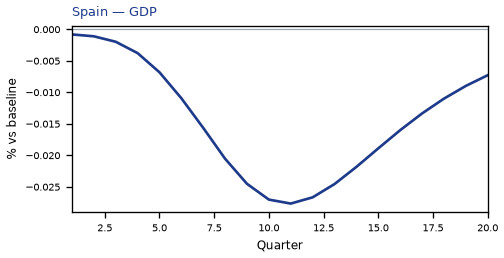
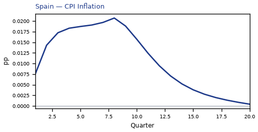
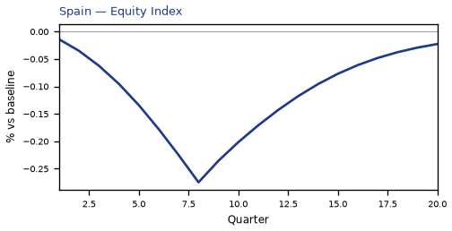
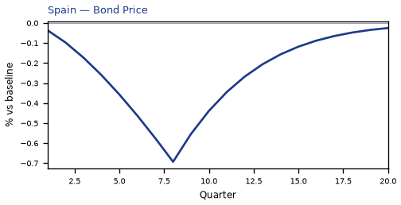
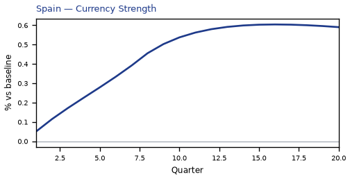
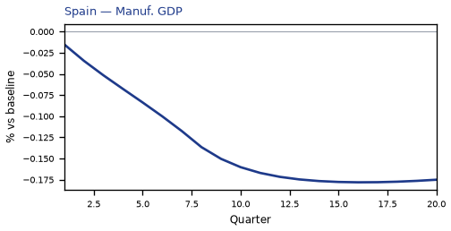
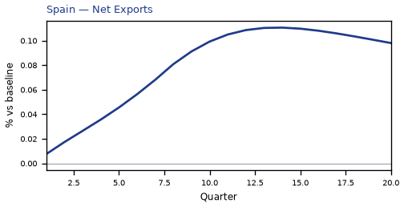
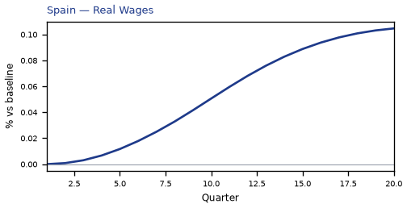
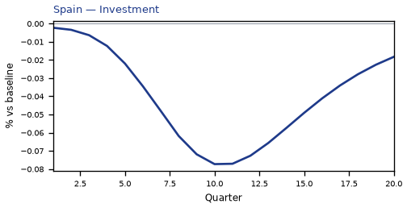
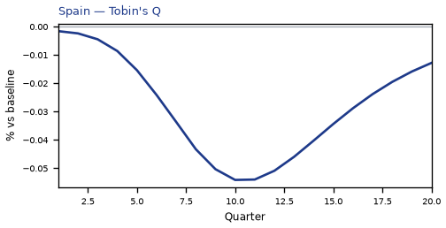
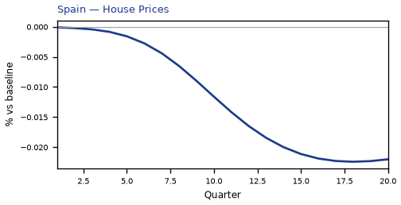
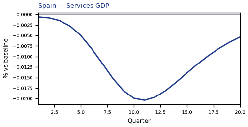
source=live · global_macro_v5 · contract v6 · Q1–Q20 JSON · not financial advice